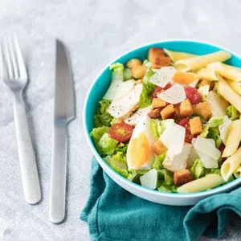

Isso é 
Conheça a história da Tupperware.
Linha de produtos e dicas de uso
Conheça as linhas de produtos.
Bolo de Laranja
Na batedeira bata os ovos, o suco de laranja, o óleo e o açúcar

Salada Ceasar
Pré-aquecer o forno a 250°C;
Cheesecake na Taça
No Turbo Chef triture as bolachas e reserve;
Creme de Brócolis
Faça um molho branco da seguinte forma: em uma panela derreta a manteiga e acrescente a farinha de trigo;
Bolo de Laranja
PREPARAÇÃO
- Na batedeira bata os ovos, o suco de laranja, o óleo e o açúcar;
- Acrescente a farinha e o fermento e com uma espátula, bata delicadamente até virar uma massa homogênea;
- Transfira para a Forma de Silicone Flor Tupperware® já untada e leve ao forno pré-aquecido a 180º C por aproximadamente 40 minutos, até dourar;
- Aguarde esfriar, desenforme sobre a base do Big Cake e polvilhe açúcar de confeiteiro sobre o bolo.
TEMPO:
1 hora
DIFICULDADE:
Médio
CUSTO:
Médio
Ingredientes
- 03 ovos;
- 01 xícara de óleo;
- Suco natural de 02 laranjas;
- 03 xícaras de farinha de trigo;
- 02 xícaras de açúcar;
- 01 colher (sopa) de fermento em pó;
- Açúcar de confeiteiro para decorar.
Salada Ceasar
PREPARAÇÃO
- Pré-aquecer o forno a 250°C;
- Em uma Criativa 300 ml, misture o molho Inglês, óleo de girassol e 1 colher de sopa de mostarda;
- Com o Pincel de Silicone, pincele esta mistura sobre os peitos de frango;
- Coloque-os no UltraPro 2 l, tempere com sal e pimenta, depois cubra e cozinhe no forno durante 20 minutos;
- Cozinhe no Micro Arroz seguindo as instruções da bula do produto;
- Descasque o alho, coloque-o no
Turbo Chef e pique juntamente com a salsa; - Junte o suco de limão, a restante mostarda (01 colher de sopa), azeite, sal e pimenta, e misture novamente;
- Descasque os ovos cozidos e corte-os em quartos;
- Corte os tomates cereja;
- Lave a alface, em seguida, com a Faca Grande, corte-a em tiras de 2 cm;
- Corte os peitos de frango cozidos em fatias finas;
- Na Criativa 3 l, misture alface, a massa, os tomates, o frango e o conteúdo do Turbo Chef;
- Tempere com sal e pimenta;
- Prepare as lascas de parmesão com Prática 2L;
- Sirva a salada com os ovos, as lascas de parmesão e os croutons por cima.
TEMPO:
30 minutos
DIFICULDADE:
Fácil
CUSTO:
Médio
Ingredientes
- 1 colher de sopa molho inglês (± 15 ml);
- 01 colher de sopa de óleo de girassol (± 15 ml);
- 02 colheres de sopa de mostarda (± 30 ml);
- 04 peitos de frango (± 600 g);
- Sal e pimenta;
- 300 g penne;
- 01 dente de alho;
- 05 pés de salsa;
- 02 colheres de sopa de suco de limão (± 30 ml);
- 06 colheres de sopa de azeite (± 90 ml);
- 04 ovos cozidos;
- 250 g tomates cereja;
- 01 pé de alface (± 500 g);
- 75 g queijo parmesão;
- 100 g croutons.
Cheesecake na Taça
PREPARAÇÃO
- No Turbo Chef triture as bolachas e reserve;
- Em uma Criativa pequena, coloque o cream cheese, o leite condensado e as gotinhas de limão e misture bem até virar um creme liso e homogêneo;
- Em um copo largo e fundo coloque metade da geleia de frutas vermelhas no fundo, acrescente metade do creme feito na Criativa, cobra com metade da farofa de bolachas e depois como chantily;
- Decore com as folhinhas de hortelã.
TEMPO:
15 minutos
DIFICULDADE:
Médio
CUSTO:
Médio
Ingredientes
- 8 bolachas de amido de milho;
- 01 xícara de geleia de frutas vermelhas;
- 01 xícara de cream cheese;
- ½ xícara de leite condensado;/li>
- Gotas de limão;
- 01 caixinha de chantily resfriada batida no Speedy Chef;
- Folhinhas de hortelã..
Creme de Brócolis
PREPARAÇÃO
- Faça um molho branco da seguinte forma: em uma panela derreta a manteiga e acrescente a farinha de trigo;
- Vá misturando e cozinhando até virar um mingau de cor bege;
- Aos poucos vá acrescentando o leite, misturando e cozinhando até virar um creme liso;
- Tempere com o sal e a noz moscada misture acrescente os brócolis, misture e deixe cozinhar por 5 minutos em fogo baixo, mexendo de vez em quando;
- Sirva.
TEMPO:
15 minutos
DIFICULDADE:
Fácil
CUSTO:
Baixo
Ingredientes
- 30 gramas de manteiga sem sal;
- 30 gramas de farinha de trigo;
- 500 ml de leite;
- Sal e noz moscada em pó a gosto;
- 02 xícaras de brócolis pré-cozidos e picados;
- Queijo parmesão ralado.